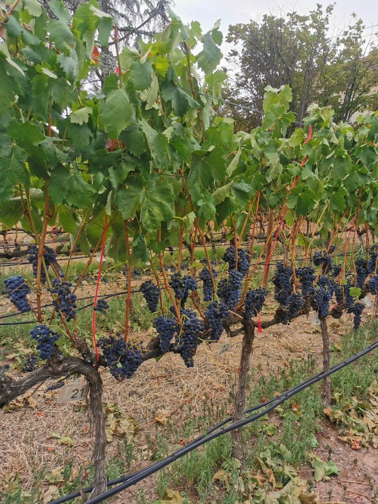
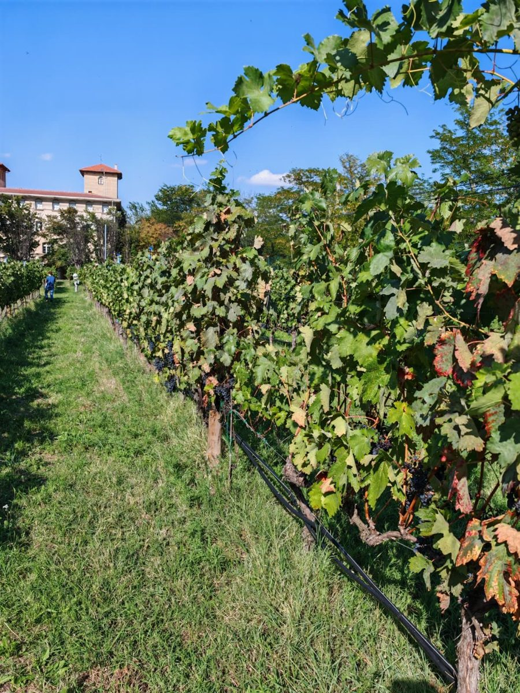
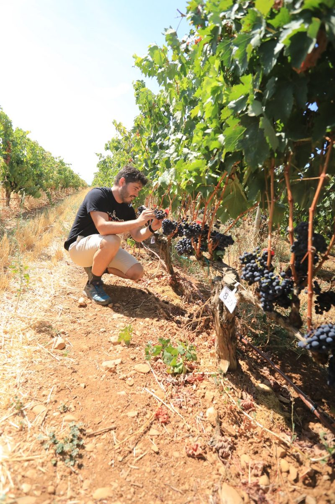
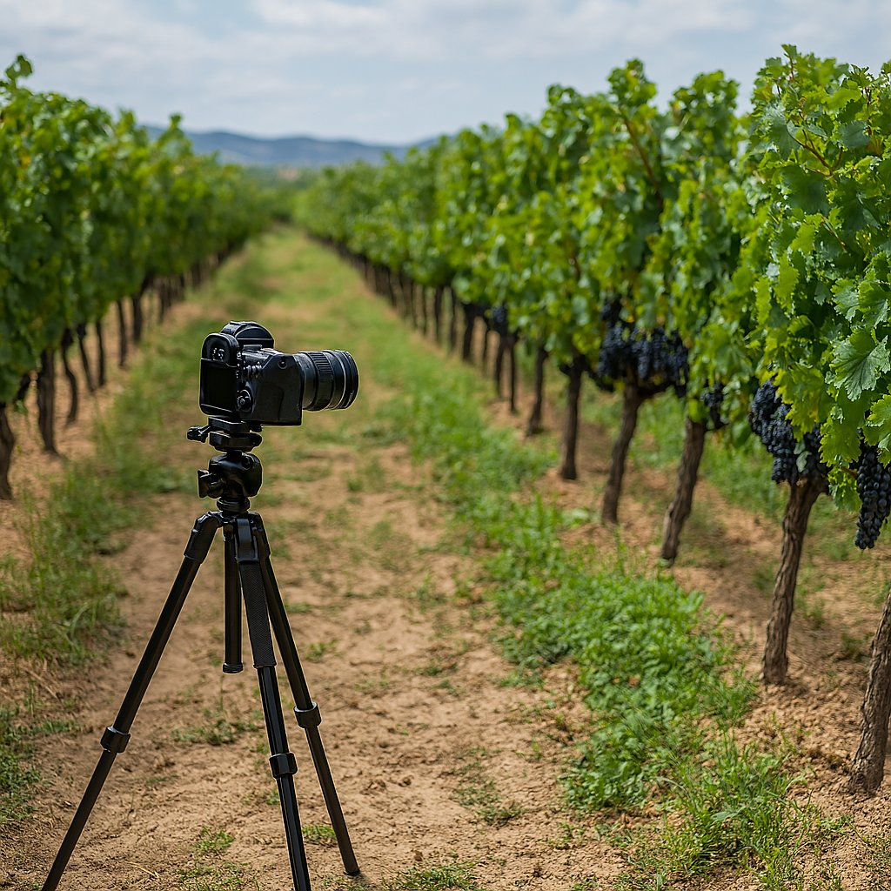
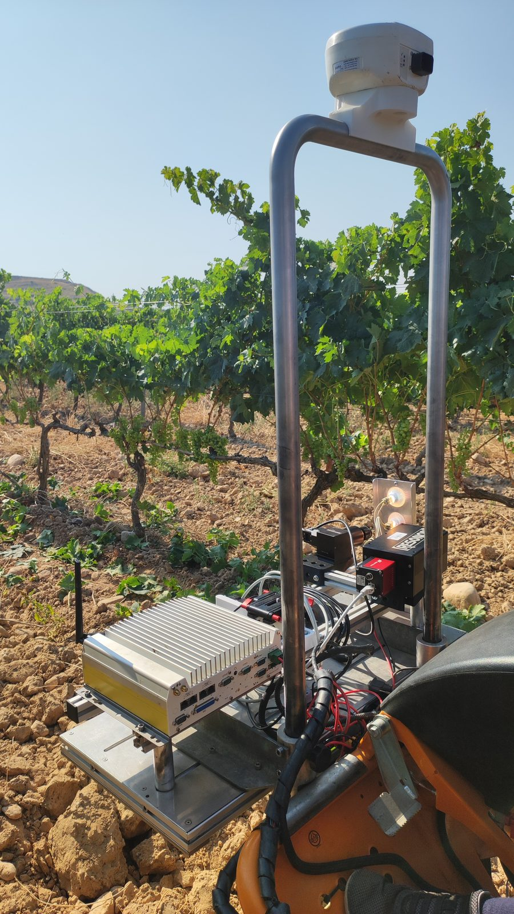
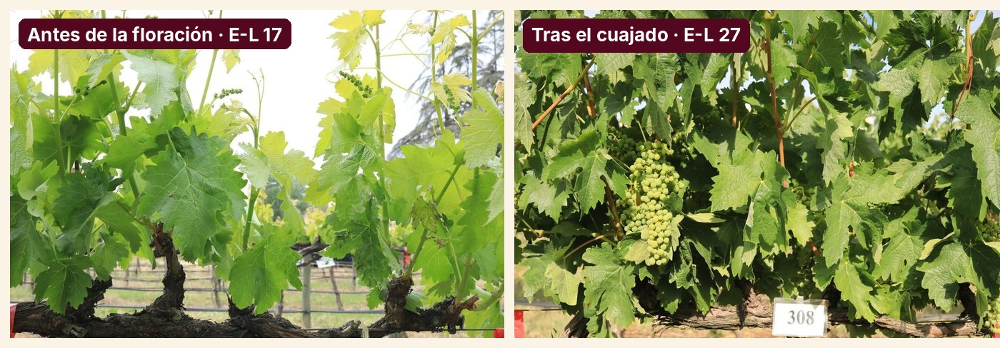
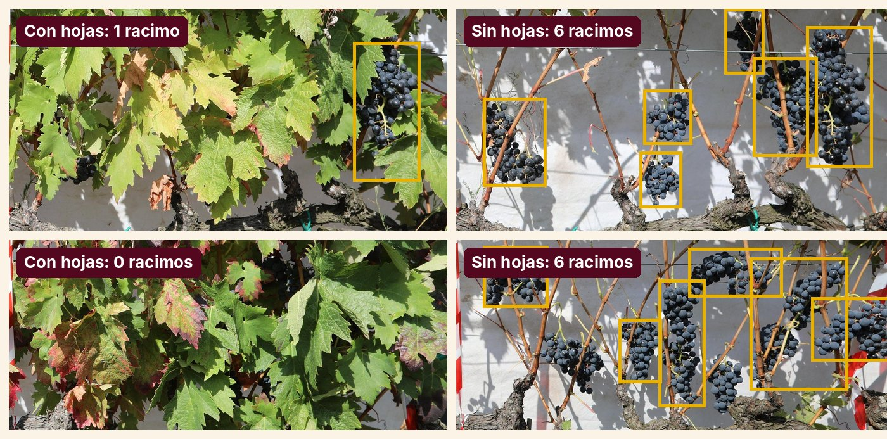
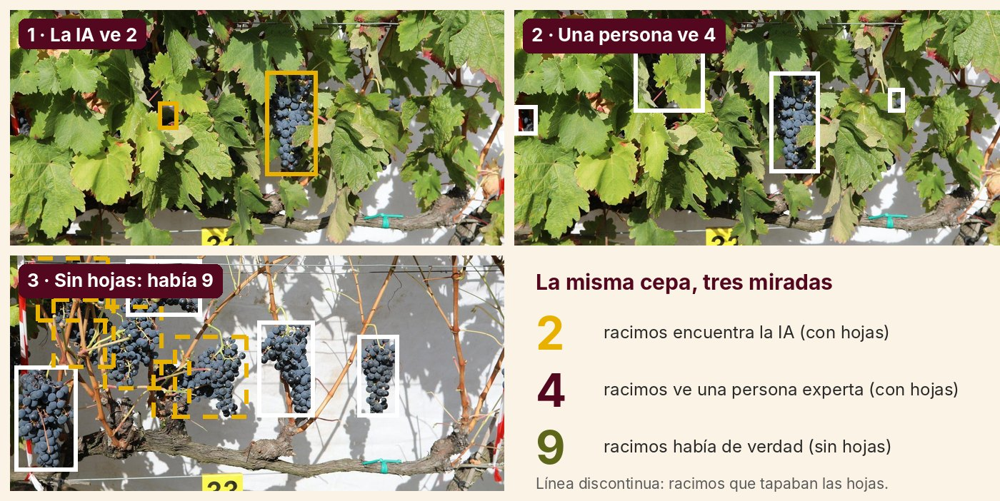
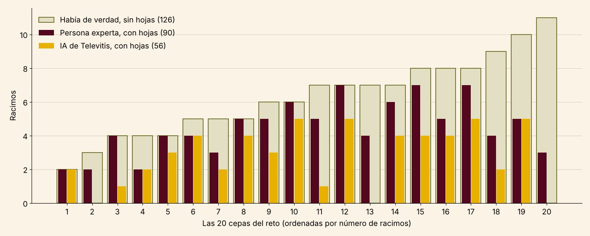

¿Cuántos racimos hay?
Cinco cepas, cinco estimaciones. Después, quitamos las hojas y vemos cuántos racimos escondían.
Antes de jugar: el problema
Antes de la vendimia, bodegas y viticultores necesitan saber cuánta uva habrá. Y lo que más pesa en esa cuenta es el número de racimos por cepa.
Por qué importa contar racimos
El número de racimos por cepa suele ser el componente que más explica la variación de la cosecha: la regla clásica le atribuye en torno al 60 %, aunque esa proporción cambia según el viñedo y no debe darse por supuesta (Laurent et al., 2021). Además, tras la floración el número de racimos ya no cambia, así que puede contarse con antelación (Laurent et al., 2021). Esa estimación previa se llama Aforo: Estimación de la cosecha que dará un viñedo antes de vendimiar, normalmente contando racimos..
Para qué le sirve a la bodega y a quien cultiva
Saber con tiempo cuánta uva habrá es una información esencial para todo el sector: orienta el manejo del viñedo, la elaboración, la venta, la contabilidad y la estrategia de la añada (Laurent et al., 2021). A quien cultiva le permite, por ejemplo, aclarar racimos para favorecer la maduración y evitar cargar demasiado o demasiado poco las cepas; a la bodega, calcular el espacio, la maquinaria y el personal que necesitará durante la vendimia (De la Fuente, 2014).


Cómo se hacía
El método tradicional consiste en cortar y contar racimos de unas pocas cepas y extrapolar al resto de la parcela. Es un muestreo destructivo, lento y caro, y la muestra no recoge toda la variabilidad del viñedo (Íñiguez et al., 2024).

Cómo se hace ahora
Se fotografían las cepas con cámaras convencionales y un modelo de inteligencia artificial, entrenado con imágenes en las que personas han marcado cada racimo, aprende a localizarlos. En un estudio en viñedos comerciales, el modelo (YOLOv4) logró un error de 1,12 racimos, con un R² de 0,83 en validación (Íñiguez et al., 2024).


¿Se pueden contar racimos antes de la floración?
Cuanto antes se sepa cuánta uva habrá, más margen hay para actuar. Por eso se ha probado a detectar inflorescencias (los racimos todavía en flor) y racimos jóvenes. En un estudio con 436 imágenes de seis variedades, tomadas antes de la floración y tras el cuajado, de día y de noche con un foco LED, el mejor resultado para los racimos se obtuvo tras el cuajado y con luz de día (F1 = 0,77; R² = 0,97), mientras que para las inflorescencias fue mejor de noche con luz artificial (F1 = 0,71; R² = 0,76) (Íñiguez et al., 2025a).

El obstáculo: las hojas
Las hojas tapan racimos; a eso se le llama Oclusión: Cuando algo tapa lo que queremos ver; aquí, las hojas tapando los racimos.. En un estudio con cinco viñedos de Tempranillo, al aumentar la oclusión la relación entre los píxeles de racimo en la foto y la cosecha bajó de un R² de 0,77 a uno de 0,63 (Íñiguez et al., 2021). Quitar hojas (Defoliación: Quitar hojas de la cepa. Aquí sirve para ver los racimos que las hojas tapaban.) es una práctica habitual en el viñedo, y aquí la usamos para ver qué escondían.

Más detalle y referencias completas en «Para saber más», al final de la página.
Ahora te toca a ti
1. Cuenta
Verás una cepa con hojas. Cuenta los racimos que veas y escribe tu cifra.
2. Comprueba
Pulsa «Comprobar»: aparecen con línea continua los racimos que ve una cámara.
3. Quita las hojas
Pulsa «Quitar las hojas» o arrastra el deslizador: con línea discontinua salen los que estaban escondidos.
4. Compárate
Son cinco cepas. Al final, el marcador: lo que contaste tú, lo que contó la IA y lo que había de verdad, y cuánto tardas frente a ella.
La pregunta tiene truco: ni tú ni la cámara podéis ver lo que tapan las hojas. Por eso se compara tu cifra con lo que ve la cámara y después con lo que había de verdad. Las cajas de «lo que ve una cámara» las marcaron personas expertas sobre la foto con hojas. Además, en cada cepa verás cuántos racimos contó la IA de Televitis en esa misma foto: tú, la IA y lo que había de verdad.
Pensado para quien no puede ver las imágenes. Con él, la pregunta cambia: calcula cuántos racimos hay en total, incluidos los que tapan las hojas.
Sin límite de tiempo, pero se cuenta cuánto tardas por imagen para compararte con la IA al final. No se guarda nada fuera de tu navegador.
- Línea continua: racimo que una cámara ve con hojas.
- Línea discontinua: racimo que estaba escondido por las hojas.
Resultado de la ronda
Tus números
¿Y la rapidez?
| Cepa | Tu respuesta | Racimos que ve una cámara | Racimos que aparecen al deshojar | Racimos en total sin hojas |
|---|
Después de jugar: qué hemos aprendido
Las hojas esconden racimos.
Por eso la IA se usa pronto en la temporada, antes de que crezca la vegetación y tape los racimos (Íñiguez et al., 2025a). En ese estudio, el mejor resultado para bayas pequeñas llegó con luz de día, y para inflorescencias, con iluminación artificial nocturna: cuándo y cómo se mira importa.
Contar racimos no es saber los kilos.
El peso se estima aparte, por ejemplo midiendo la forma y el tamaño del racimo en la foto (Poblete-Echeverría et al., 2025).
La IA no sustituye a quien conoce el viñedo.
Le da datos antes y de todas las cepas; la decisión sigue siendo de una persona.
Un dato de esta muestra
En las 20 cepas de este reto, las hojas escondían 36 de 126 racimos (28,6 %).
Ojo: son 20 cepas elegidas para mostrar casos fáciles y difíciles, no una muestra representativa de un viñedo. Los «racimos en total sin hojas» son los etiquetados en la imagen sin hojas; no son un recuento de campo. «Racimos que aparecen al deshojar» son los que se ven sin hojas y no con ellas.
Para saber más
Este reto nace de la tesis doctoral de Rubén Iñiguez Mangado (Universidad de La Rioja – ICVV, 2025), sobre cómo estimar la cosecha del viñedo con inteligencia artificial y visión por computador, y de sus artículos: el efecto de las hojas (Íñiguez et al., 2021), el recuento de racimos con IA (Íñiguez et al., 2024) y su detección antes de la floración (Íñiguez et al., 2025a).
La misma cepa, tres miradas: la IA, una persona y la realidad
Esta es una de las cepas del reto. Con hojas, el modelo de detección de racimos de Televitis encuentra 2 racimos y una persona experta marca 4. Al quitar las hojas aparecen 9. La IA no falla por «no saber» qué es un racimo: falla, como la persona, porque no puede ver lo que está tapado.

Las 20 cepas del reto, una a una
Si se suman las 20 cepas, el modelo encuentra 56 racimos en las fotos con hojas, una persona experta marca 90 y, sin hojas, había 126. En 16 de las 20 cepas la persona ve más racimos que la IA, y en ninguna la IA ve más que la persona. Y cuando la cepa tiene muchos racimos, los dos se quedan lejos de lo que había. Por eso la investigación no se queda en contar lo que se ve: busca cómo corregir lo que las hojas esconden (Íñiguez et al., 2021).

Estas fotos pueden haber servido para entrenar el modelo, así que sirven para ilustrar el problema de las hojas, no para medir su acierto.
Artículos de investigación en que se basa este reto
- Laurent, C., Oger, B., Taylor, J. A., Scholasch, T., Metay, A. y Tisseyre, B. (2021). A review of the issues, methods and perspectives for yield estimation, prediction and forecasting in viticulture. European Journal of Agronomy, 130, 126339. doi:10.1016/j.eja.2021.126339
- Jaramillo, J., Vanden Heuvel, J. y Petersen, K. H. (2021). Low-cost, computer vision-based, prebloom cluster count prediction in vineyards. Frontiers in Agronomy, 3, 648080. doi:10.3389/fagro.2021.648080
- Jocher, G., Qiu, J., Liu, M., Lyu, S., Akyon, F. C. y Kalfaoglu, M. E. (2026). Ultralytics YOLO26: Unified real-time end-to-end vision models. arXiv:2606.03748. doi:10.48550/arXiv.2606.03748
- De la Fuente, M. (2014). The relevance of the yield prediction methods in vineyard management. Bulletin de l’OIV, 87(1001-1002-1003), 387–394.
- Íñiguez, R., Gutiérrez, S., Poblete-Echeverría, C., Hernández, I., Barrio, I. y Tardáguila, J. (2024). Deep learning modelling for non-invasive grape bunch detection under diverse occlusion conditions. Computers and Electronics in Agriculture, 226, 109421. doi:10.1016/j.compag.2024.109421
- Íñiguez, R., Palacios, F., Barrio, I., Hernández, I., Gutiérrez, S. y Tardaguila, J. (2021). Impact of leaf occlusions on yield assessment by computer vision in commercial vineyards. Agronomy, 11, 1003. doi:10.3390/agronomy11051003
- Íñiguez, R., Poblete-Echeverría, C., Barrio, I., Hernández, I., Gutiérrez, S., Martínez-Cámara, E. y Tardáguila, J. (2025a). Impact of phenological and lighting conditions on early detection of grapevine inflorescences and bunches using deep learning. Agriculture, 15, 1495. doi:10.3390/agriculture15141495
- Poblete-Echeverría, C., Berry, A., Venter, T., Velez, S., Gonzalez Pavez, M. I. e Íñiguez, R. (2025). Morphological image analysis for estimating grape bunch weight under different irrigation regimes in Cabernet-Sauvignon. OENO One, 59(2). doi:10.20870/oeno-one.2025.59.2.9309
Imágenes y etiquetas del reto: Íñiguez et al. (2024). Todas las clases de racimo del etiquetado original se agrupan aquí como «racimo». Más en La ciencia detrás y Créditos.